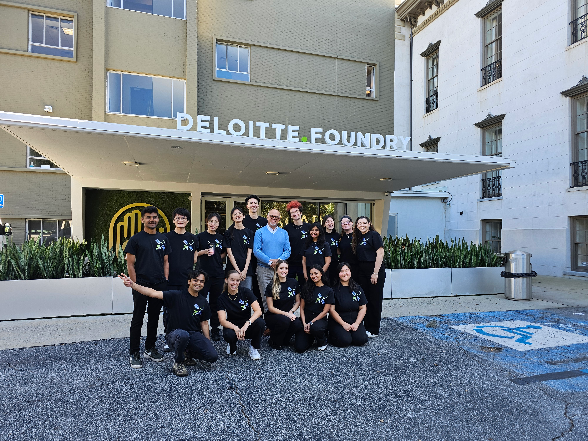

About me · Off the clock, mostly
Hi, I’m Jaswanth.
I ask a lot of questions.
Then a few more.
I started in computer science because I wanted to understand how products worked. Somewhere between building them and using them, I became much more interested in understanding what people actually needed.

That curiosity took me to SCAD, where I became a scholar and earned my MA in Interactive Design with a concentration in Human-Centered Design.
My first job taught me the other half of the lesson: empathy for users matters, but so does empathy for the business keeping the product alive.
“I design with equal empathy for people and business.”

Okay, enough about me